0数据质量声明（必须先看）
- Ignik FireCan 产品页无效：文件第 1 行即
404 Not Found，产品占位符是Example product $29。Ignik 的结论只能基于首页，而首页也仅有骨架——只有轮播标语碎片（THE BURN BAN / PARTY PLAN、SUSTAINABLE CAMP、THE OVERLAND FIRE BEAST），没有完整 hero 主标题+副标题段落。 - Solo Stove hero 被促销占位：首屏全部是促销 banner 和 sale 文案，文件中未见品牌型 hero 主标题（无 "the world's best fire pit" 类 H1）。只能取 title 标签和促销/技术段落。建议非促销期重抓。
- BioLite 抓到的不是首页：实际是 FirePit+ 的 PDP 产品页（title 为
FirePit+ Smokeless Fire Pit & FREE Carry Bag – BioLite）。BioLite 品牌首页文案本次不可用。 - 重量数据缺口：仅 BioLite（19.8 lbs）、NOMAD（22 lbs）、Snow Peak（32 lbs）、Gather（~210–650 lbs）在文件中有明确数字；Solo Stove / Breeo / KBBQ Bros / Ignik 的重量文件中未见，做重量对比图前需补齐。
- 有效且信息最全的：Gather Grills（含完整定位叙事、产品线、评价、创始故事）、NOMAD（首页 + Rodeo PDP，文案量最大）、KBBQ Bros、Breeo、Snow Peak。
- 本页所有截图均为 2026-07-21 桌面视口 1440×900 实访抓取，用于让本报告引用的英文原文可被肉眼核对，不是示意图。
- Solo Stove 复访失败：8 家里唯一被 Cloudflare Managed Challenge 拦下的站，未取得首屏截图，已把拦截页原样放在其卡片中。Solo Stove 的文字结论仍来自 2026-07-20 的页面全文，不受影响。
- Breeo「三支柱」模块未截到：
Smokeless Tech / American Made / More Than Just a Fire Pit在实时页面上是高度为 0 的隐藏节点（未展开的 tab），无法截图。该结论仍以 07-20 全文为准。 - 截图时间点与 07-20 抓取相隔一天，促销 banner、轮播当前帧、评价条数等会变；凡截图与正文数字有出入的，以正文标注的 07-20 抓取为准。
- 抓取出口 IP 位于日本，KBBQ Bros 的地区选择器显示 Japan / CAD $。本页 KBBQ Bros 截图只用于核对文案，不作价格证据；价格以正文 07-20 记录为准。
1八家逐条拆解
2.1 Solo Stove —— 后院基建型功能派
- Hero
- 文件中未见品牌主张型 hero。title =
Solo Stove® | Fire Pits, Pizza Ovens & Outdoor Gear；首屏 banner =Build your dream backyard this summer. - 定位类型
- 卖功能（无烟技术）+ 卖场景（后院）
- 价格带
- 火坑 $359.99–$899.99；Infinity Flame propane $649.99
- 主打场景
- backyard（
Build your dream backyard、Backyard Fire Pits）
Patented smokeless design with Signature 360° Airflow and Secondary Burn eliminates nearly all smoke. Burns 400° hotter than standard fires… No more dodging smoky clouds or smelling like a campfire./World's #1 Smokeless Fire Pit
- 首屏被四条促销 banner 轮播占满（
America's 250th Summer Sale、FREE Shipping On Every Order Over $199）。 - 品牌叙事在中部模块：
Everything New for Everything Outside→…create a space made for every meal, hangout, and summer night. - 聚会只以"容纳人数"出现（
Seats 4-6 people/Seats 6+），没有任何关于"一起做饭"的文案。 - 品类扩张最猛：Fire Pits / Pizza Ovens / Griddles / Coolers / Furniture / Patio Heater / Movie Night。已经不是火坑品牌，是后院品类集合。
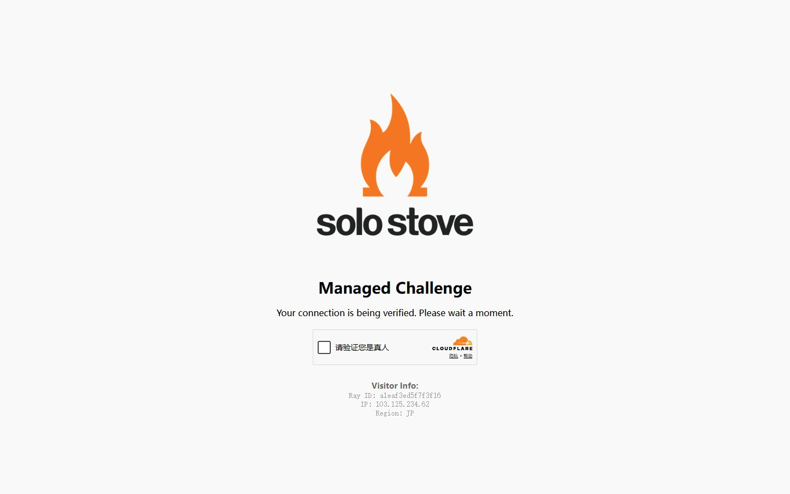
solostove.com/en-us，站点返回 Cloudflare Managed Challenge（页面显示 Your connection is being verified，Ray ID 与访问 IP 可见），换 headed 真实浏览器 + 独立 profile、等待 30 秒仍未放行。8 家里唯一没有首屏截图的一家。正文中 Solo Stove 的 hero / 促销 banner / 技术段落结论，全部来自 2026-07-20 抓取的页面全文，本次未做任何改动。2.2 Breeo —— 原创者叙事 + 美国手工
- Hero
The Original Smokeless Fire Pit/ 副标Hand Crafted, American Made Fire Pits Built for the Backyard- 定位类型
- 卖身份认同（原创者 / 美国制造 / Firemaster）+ 卖功能
- 价格带
- 火坑 $399–$1,899；家具 $199–$2,899；套装最高 $3,835
Since inventing the first smokeless fire pit back in 2011·Every Breeo fire pit is designed and built by craftsmen in Lancaster County, Pennsylvania, from American-sourced steel that is made to last generations.·Feed your friends, feed your soul, feed your fire.
- 全 8 家里最干净的一条定位句。"Backyard" 写进 hero 副标，主动放弃便携。
- 三支柱明写：
Smokeless Tech/American Made/More Than Just a Fire Pit。 - 系统化卖法：
the Breeo system grows with you. Add cooking attachments, furniture, and accessories to build your complete fireside lifestyle. - 情绪句仅一处，仍是"我做饭喂你们"，不是"一起做"。
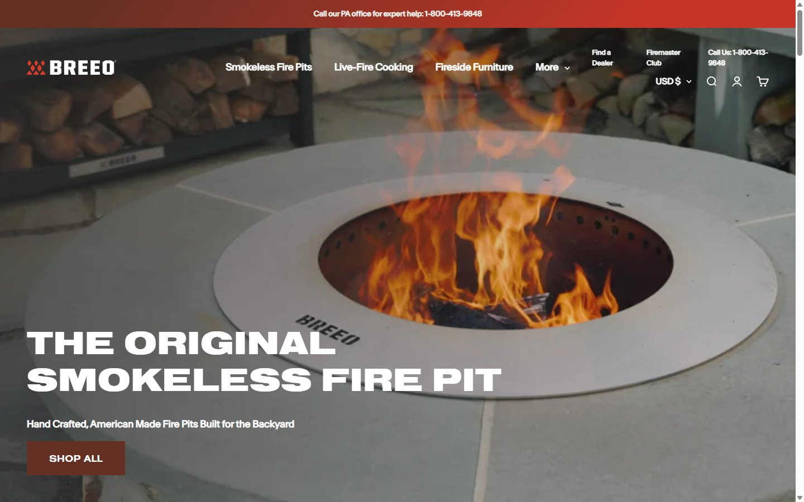
THE ORIGINAL SMOKELESS FIRE PIT（原创者叙事）与副标 Hand Crafted, American Made Fire Pits Built for the Backyard 同框可见——Built for the Backyard 是写进 hero 副标的，不是我们从别处推断的。这也是正文判断"Breeo 等于主动让出便携赛道"的唯一依据。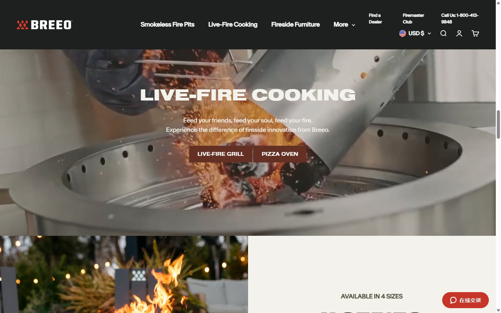
LIVE-FIRE COOKING 模块下写着 Feed your friends, feed your soul, feed your fire.。三个动词全是 feed（我喂），主语是掌勺的那一个人——这正是正文把 Breeo 判为"我做饭喂你们"而非"一起做"的原文出处。2.3 BioLite FirePit+ —— 参数与专利驱动注意：抓的是 PDP
- 主标 / 副标
FirePit+ Smokeless Fire Pit & FREE Carry Bag/Portable Fire Pit & Grill- 价格
- $499.95（原价 $599.95）
- 场景
- camping + backyard 双写：
Backyard? Easy. Beach? Got it. Backcountry? No problem.
TIME Best Invention of 2023.·Unlike traditional cylindrical fire pits, you'll get a full unobscured view of the flames through FirePit+'s patented X-Ray mesh body.·Highly portable at just under 20 lbs, folding legs, a packable footprint·The Ultimate Hack: Cookout-To-Hangout
- 唯一拿第三方奖项当第一句正文的品牌。便携表述明确量化：
Weight: 19.8 lbs (8.98 kg)。 - 唯一一家写"从做饭到聚会"动线的，但依然是一个人烤、大家享受。
- 科技/装备叙事密集：
12,800 mAh USB rechargeable powerpack、51 airjets、Free Bluetooth App、Four fan speeds。 - 有公益叙事：
For every product sold, a person living in energy poverty gains access to safe lighting and charging。
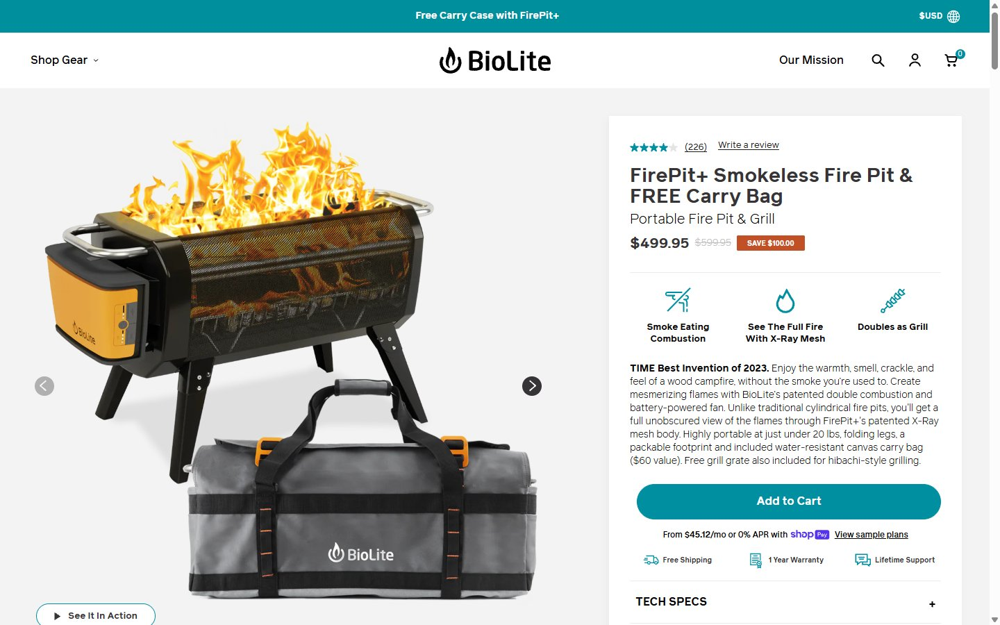
FirePit+ Smokeless Fire Pit & FREE Carry Bag / 副标 Portable Fire Pit & Grill）；② 正文第一句就是奖项 TIME Best Invention of 2023.——全场唯一把第三方奖项放在正文开头的品牌；③ 便携表述量化且带三连场景：Highly portable at just under 20 lbs, folding legs, a packable footprint、hibachi-style grilling。价格 $499.95（划线价 $599.95）已切换至 USD 后读取。2.4 NOMAD Grills —— 便携赛道的话语权占有者
- Hero
introducing the all-new / Rodeo Grill & Smoker+Preorder NOW+Made in USA，带稀缺性Drop #1 Sold Out — Reserve your RODEO for Drop #2- PDP 副标
Built for Serious Charcoal Cooking.- 价格
- 主机 $399；配件 $16–$168；工具 $148
- 场景
truck beds, campsites, boat docks, tailgates
a full-size charcoal grill and smoker packed into a suitcase footprint. Sear steaks over screaming-hot coals. Smoke ribs low and slow for hours. No pellets, no propane, no outlet. Just charcoal, fire, and flavor.·This is the last portable grill you buy.
媒体引语墙是它最重的资产，16 条里至少 5 条直接给"便携第一"背书：
"The best portable grill on the market."
"Hands-down the best-built portable grill I've ever used."
"it is the most convenient portable grill we've ever used."
"NOMAD is uncommonly tough and durable while also incredibly compact."
"A bull's-eye in the center of the venn diagram of high-quality and portable grill."
"there is not a truly portable grill on the market that holds a candle to the Nomad."
社会证明层：8,000+ Five Star Reviews，单配件评价数就有 1229 / 746 / 724 条。规格话语：22 lbs、500+ square inches、fits 36 burgers or 2 full racks of ribs。情绪只有一句半。
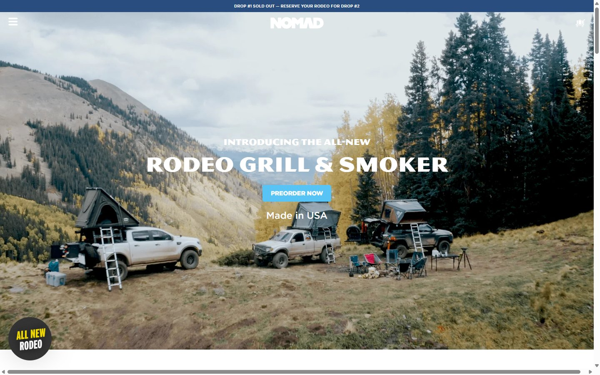
INTRODUCING THE ALL-NEW / RODEO GRILL & SMOKER、按钮 PREORDER NOW、信任词 Made in USA，最顶部公告条即稀缺性话术 DROP #1 SOLD OUT — RESERVE YOUR RODEO FOR DROP #2。注：首访会弹出订阅弹窗，本图为关闭弹窗后拍摄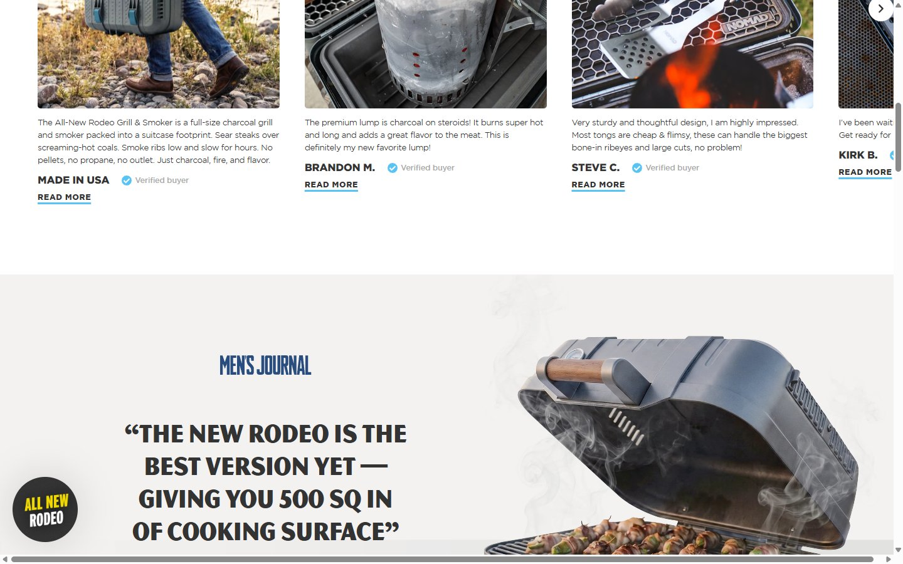
a full-size charcoal grill and smoker packed into a suitcase footprint. Sear steaks over screaming-hot coals. Smoke ribs low and slow for hours. No pellets, no propane, no outlet. Just charcoal, fire, and flavor. ——注意这段话里没有一个字提到「一起做饭」或「聚会」，全部指向一个人的硬核炭火技艺，与正文对 NOMAD 的判定一致。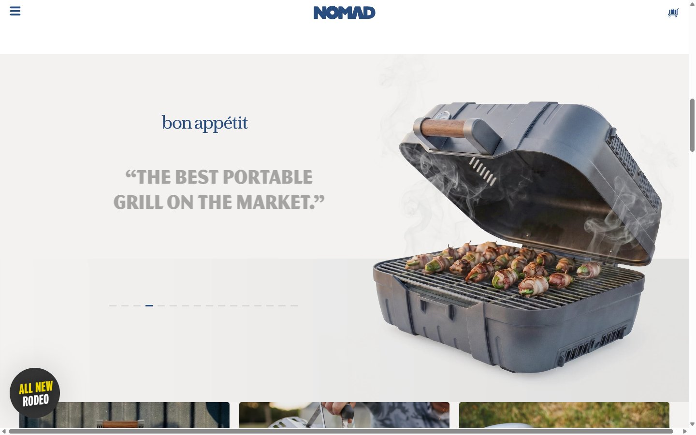
"THE BEST PORTABLE GRILL ON THE MARKET."——正文引用的第一条背书。底部那排圆点即引语数量，同一轮播里还实拍到 MEN'S JOURNAL、GARDEN & GUN、FOOD & WINE 三家刊头。这不是自我主张，是第三方媒体名义的背书，AroundFire 无法靠改文案在短期内复制——正文"不要正面打 Most Portable Grill"的建议就建立在这张图上。2.5 Gather Grills —— 全场唯一把"一起做饭"当产品定义的品牌
- Hero
More than a grill./A place to gather.- 副标
A 360° rotating outdoor cooktop that grills, griddles, smokes, becomes a fire pit, and seats everyone at the same table. Built by hand in Ellaville, Georgia.- 价格
- $1,999.99 / $2,999.99 / $4,999.99 / $6,999.99
它直接把竞品的痛点写成文案（The usual backyard stack）——这是全场最强的说服模块：
Outdoor dining table — seats everyone — across the patio from the foodA grill — the cook stands alone, back to the partyA firepit — everyone's favorite seat — it just can't make dinner- 结论句：
…or just one circle./Five purchases. Or one circle.
A Gather is not a grill plus a table. It is the grill, griddle, smoker, fire pit, and dining table in one piece of outdoor furniture. And unlike everything on that list, every seat is at the fire.·Spin the food. Stay in the conversation.
信任资产：500+ Grills built since 2020、50+ Country clubs cooking on Gather、5.0★ From 135 verified reviews、60-day guarantee（we'll refund it in full and pay the freight home）。
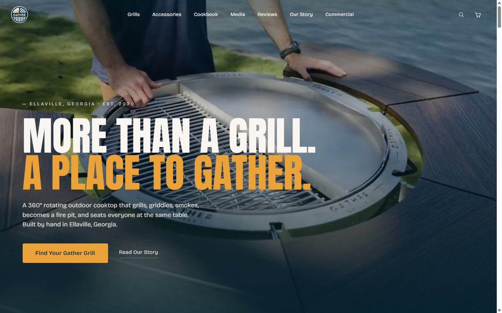
MORE THAN A GRILL. / A PLACE TO GATHER.，副标 A 360° rotating outdoor cooktop that grills, griddles, smokes, becomes a fire pit, and seats everyone at the same table. Built by hand in Ellaville, Georgia.。请注意 seats everyone at the same table 出现在副标而不是详情页——这是"一起吃"被当成产品定义、而不是当成卖点补充的写法。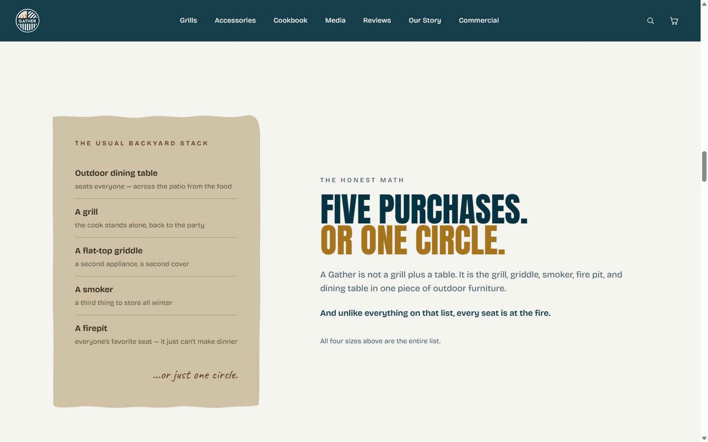
THE USUAL BACKYARD STACK 逐条把竞品的痛点写成文案：A grill — the cook stands alone, back to the party（做饭的人背对着party、一个人站着）、A firepit — everyone's favorite seat — it just can't make dinner；落款一句手写体 …or just one circle.。右栏用 THE HONEST MATH 收口成 FIVE PURCHASES. OR ONE CIRCLE. + And unlike everything on that list, every seat is at the fire.。它没有夸自己，它是先替你说出你家后院的窘境，再给一个替代品——正文战术要点 2 建议的"同款对比结构"，指的就是这个模块。⚠️ 照抄结构可以，数字必须实测~210 lbs（最小款）到 ~650 lbs，4–8 Week build queue，起价 $1,999.99。完全不便携，且需要固定后院。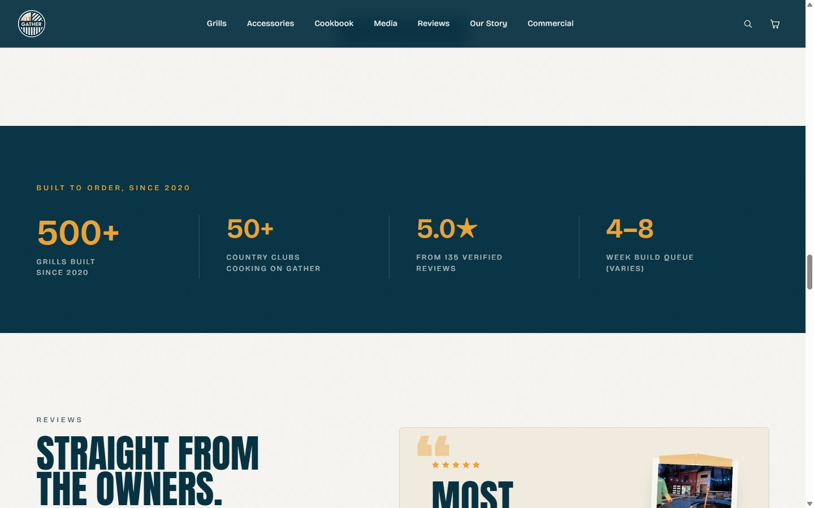
500+ GRILLS BUILT SINCE 2020、50+ COUNTRY CLUBS COOKING ON GATHER、5.0★ FROM 135 VERIFIED REVIEWS——但同一条的最后一格是 4–8 WEEK BUILD QUEUE (VARIES)。它自己把"要等 4–8 周"当成信任背书（订制感）在展示，而这恰恰是 $189–239 即买即走的 AroundFire 天然占便宜的地方。2.6 KBBQ Bros —— 唯一直取韩烤品类，但文案是功能罗列
- Hero
Korean BBQ Grill Table for Home（品类词直给，SEO 型 hero）- 信任条
Proudly made in Korea. 5,000+ tables sold.- 价格 / 运费
- Duo V2 $399（原价 $599）；评价中出现 $359 charcoal 版；运费
$99 Flat Rate Per table - 桌子属性
Table Diameter: 43"、Max Capacity: 6 adults + 2 kids
四个卖点全是功能：Sturdy Leg Design / Premium Stainless Steel & Foldable / Stable & Safe Burner System / Made in Korea。唯一情绪型句子在 PDP：the original grill for the modern Asian BBQ enthusiast。
foldable design for easy storage and transport），不是"带出门"——文件中未见 camping / travel 类场景词。情绪价值全靠 UGC 承担，而且核心说服逻辑是经济账不是情绪：
"Can't afford to eat KBBQ every week so I purchased this table! Buy the meat from costco… now we can afford to eat KBBQ at home!"
"we are going to make our money back at least tenfold by doing it in our backyard instead of going out."
"it feels like we're dining at a high-end Korean BBQ restaurant."
差评也如实呈现：the table was cheap sloppy, you could see silicone all over holding the legs together（61 条评价里 3% 一星、3% 二星）。
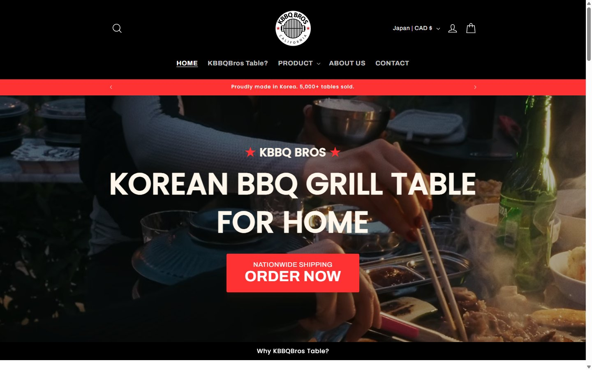
KOREAN BBQ GRILL TABLE FOR HOME，没有一句品牌主张；红色信任条 Proudly made in Korea. 5,000+ tables sold. 紧贴导航。整屏没有出现任何 camping / portable / travel 类词，与正文"守着品类不出门"的判定一致。⚠️ 口径提醒：右上角显示
Japan | CAD $ 是我方抓取出口 IP 所致，本图不作价格证据，价格以正文 07-20 记录为准。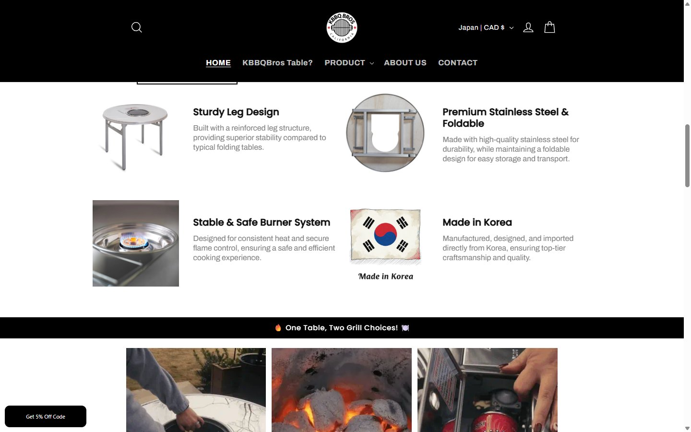
Sturdy Leg Design / Premium Stainless Steel & Foldable / Stable & Safe Burner System / Made in Korea。正文那句"它写的是好收纳、不是带出门"的原文就在右上格：maintaining a foldable design for easy storage and transport——storage 在前、transport 在后，且没有任何户外场景词跟随。手握"围桌共烤"品类却全篇在讲桌腿和不锈钢，这就是正文说的那块"空着的资产"。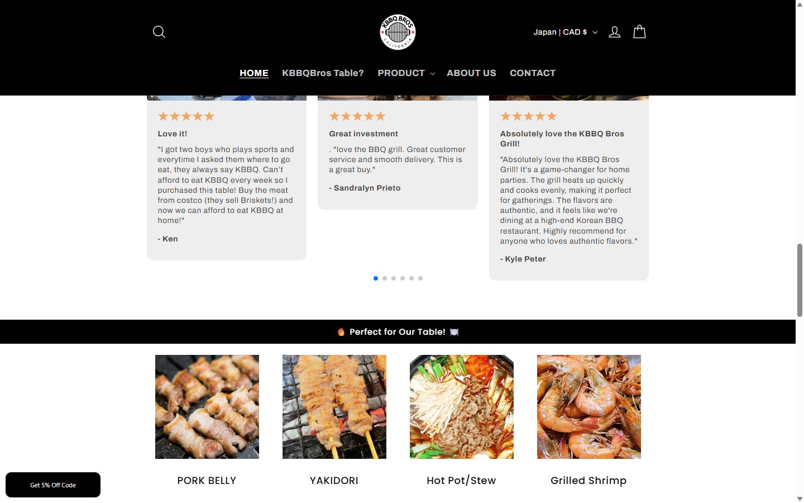
Can't afford to eat KBBQ every week so I purchased this table! Buy the meat from costco (they sell Briskets!) and now we can afford to eat KBBQ at home!；Kyle Peter 则给出体验对标——It's a game-changer for home parties. + it feels like we're dining at a high-end Korean BBQ restaurant.。下方 Perfect for Our Table! 图墙即正文引用的菜品清单（PORK BELLY / YAKIDORI / Hot Pot/Stew / Grilled Shrimp）。官方讲不锈钢，用户讲省钱和聚会——两套语言完全没接上。2.7 Ignik Outdoors —— 数据不足，只能给弱结论
- 可确认：品牌 tagline
MORE HEAT. LESS WASTE.；一级品类Sustainable Campfire、Refillable Fuel、Battery Powered Heat。 - 可确认场景词：
SUSTAINABLE CAMP、THE OVERLAND FIRE BEAST、GOOD TIMIN' CAMP ESSENTIALS、THE BURN BAN PARTY PLAN（"禁火令"场景是它独有的角度）。 - 价格：FireCan $199.95；FireCan Elite $299.95；Skullet $399.95；Gas Growler from $149.95。
- hero 副标题、产品主张、人群文案均缺失（首页只有轮播碎片，FireCan 页 404）。不做进一步推断。
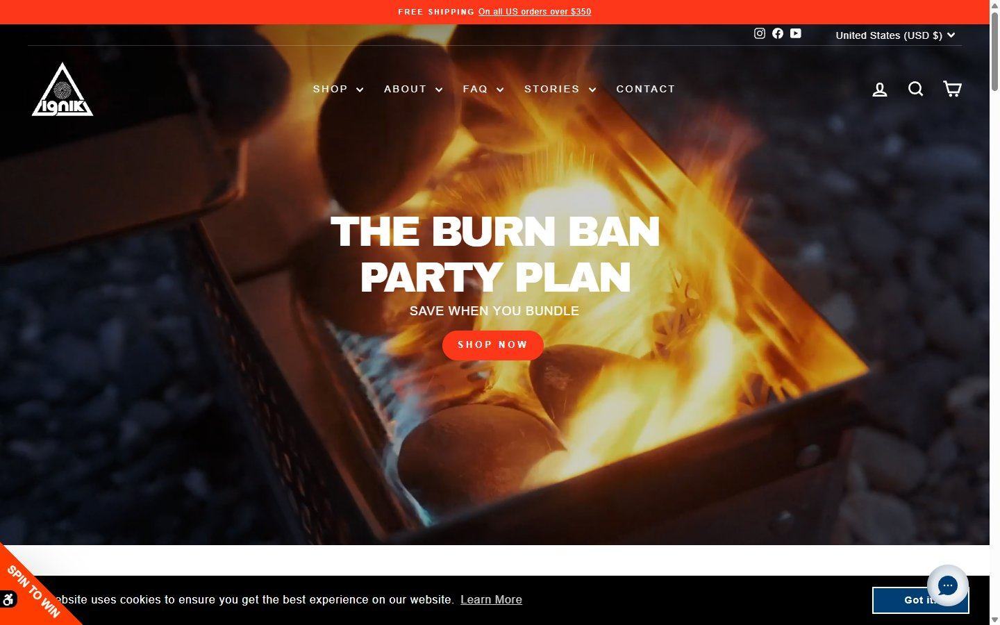
THE BURN BAN PARTY PLAN——"禁火令也能开派对"，是 8 家里独一份的切入角度，正文引用的这句在轮播首帧可见。缺的：整屏之下只有一句 SAVE WHEN YOU BUNDLE 和一个 SHOP NOW，既没有产品主张也没有人群描述——这正是正文把 Ignik 判为"数据不足、只能给弱结论"的原因，不是我们没抓，是页面上就没有。2.8 Snow Peak —— 生活方式与"围炉"文化
- Hero
Designed for Life Outside+…Japanese camping gear, perfected over 60 years to elevate your time outside.- 价格
- Takibi Fire & Grill $349.95；周边 $49.95–$599.95
Takibi 线把"围炉"做成文化词：导航 Takibi for Cooking / Takibi for Gathering / Guide to Takibi Time；品牌还开了同名餐厅。
Packable, portable, and modular, use the Takibi Fire and Grill to create a gathering anywhere."portable" 和 "gathering" 同句出现，是 8 家里除 AroundFire 意图外唯一的一处但重量拆穿轻量叙事：Weight: 32 lbs (14.5 kg)。属于"可搬运"不是"便携"。
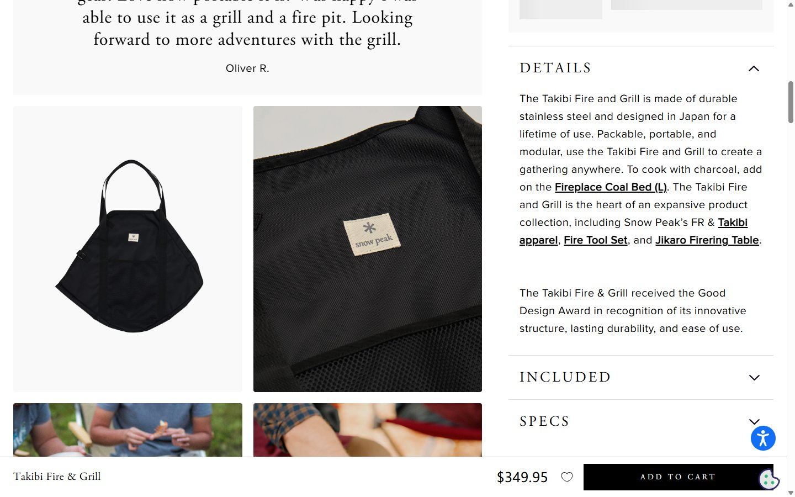
Packable, portable, and modular, use the Takibi Fire and Grill to create a gathering anywhere.——一句话里同时出现 portable 和 a gathering，这在 8 家里仅此一处。同段还可见奖项 Good Design Award 与产品体系 Takibi apparel / Jikaro Firering Table，即正文说的"把 Takibi 做成一整套语言体系"。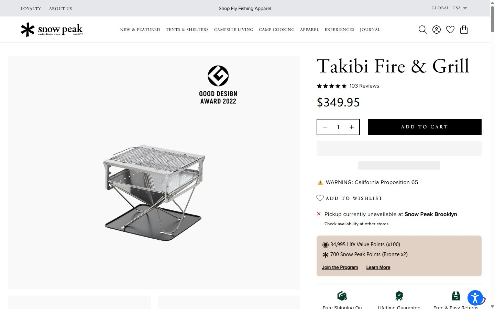
$349.95、103 Reviews、GOOD DESIGN AWARD 2022（右上角地区为 GLOBAL: USA，价格为美元口径）。配合正文的 Weight: 32 lbs——它卖的是"日式围炉文化归属"，不是"随手带走"，所以正文把它判为"唯一擦边者"而不是右下象限的占位者。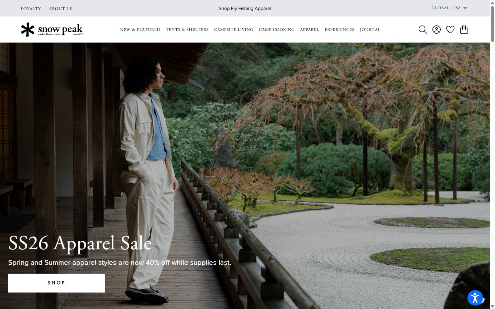
SS26 Apparel Sale，本次未截到正文引用的 Designed for Life Outside（该句取自 2026-07-20 抓取的首页全文）。放这张图是为了说清一件事：Snow Peak 的品牌首页在把流量导向服饰，火坑与 Takibi 叙事都在二级页——这与它"生活方式品牌、火坑只是其中一条线"的定位是一致的。Q1品类定位地图：「功能 ↔ 情绪」×「后院 ↔ 便携」

左上 · 后院 × 卖功能
Solo Stove（无烟专利 / 后院品类集合）
Breeo（The Original / American Made）
右上 · 后院 × 卖情绪关系
Gather Grills（More than a grill / A place to gather）
KBBQ Bros（韩烤场景，但文案功能化，位置偏左中）
左下 · 便携 × 卖功能
BioLite（19.8 lbs）
NOMAD（22 lbs，便携话语权）
Ignik（MORE HEAT. LESS WASTE.）
右下 · 便携 × 关系 —— 空的
★ AroundFire 应站位 16 lbs · $189–239 · 便携 × 一起做
Snow Peak 是唯一擦边者（Takibi 讲围炉又讲 packable），但 32 lbs + $349.95 + 日式审美溢价，它卖的是"文化归属"不是"随手带走"
- 右下象限（便携 × 情绪/关系）目前是空的。便携阵营全部在左下打参数；关系阵营在右上，但被 210–650 lbs 和 $1,999+ 锁死在后院。
- AroundFire 应该站的格子 = 右下角，且要贴着"下"（极致轻）和"右"（一起做饭）两个边。16 lbs 比 NOMAD 22 lbs、BioLite 19.8 lbs、Snow Peak 32 lbs 都轻；$189/$239 比 KBBQ Bros $399、Gather $1,999.99 低一个价格层级——这是唯一一个"聚会桌"能被单人拎走的价格带。
- 中间地带不要碰。打无烟技术会撞 Solo Stove + Breeo（专利 + 原创者叙事），打炭火性能会撞 NOMAD（媒体引语墙 + 500 sq in + Made in USA），两条都是硬资产战场。
Q2有没有品牌在讲「多人一起动手做饭」？
只有 Gather Grills 一家把它写成产品定义，其余 7 家全是「一个人操作、大家享受」。
| 品牌 | 文案证据 | 判定 |
|---|---|---|
| Gather Grills | the cook stands alone, back to the party（指出问题）→ Spin the food. Stay in the conversation. / every seat is at the fire. | 共同参与（但仍以"主厨不被隔离"为主视角，比"人人动手"稍弱） |
| KBBQ Bros | 官方文案未写；UGC 写了 It's a game-changer for home parties. | 品类天然共同动手（桌上各烤各的），但品牌没讲这件事——空着的资产 |
| Snow Peak | create a gathering anywhere、bonds built while gathering by the fire | 讲"聚"，不讲"一起做" |
| Solo Stove | 只有 Seats 4-6 people / Seats 6+ / gather around Summit | 一人操作 |
| Breeo | Feed your friends, feed your soul, feed your fire. | 明确"我喂你们" |
| BioLite | Cookout-To-Hangout：start the night with a delicious meal and end with a cozy, smokeless fire | 先做饭后聚，仍是一人操作 |
| NOMAD | Sear steaks…Smoke ribs low and slow、unexpected guests that will show up to your tailgate | 硬核个人技艺 |
| Ignik | 文件中未见相关文案 | 无法判定 |
Q3谁在打 KBBQ / 围炉聚餐？讲法是什么？
只有 2 家沾边，且讲法完全不同。其余 6 家全文检索 Korean / KBBQ / hot pot 相关词，0 提及（BioLite 唯一沾亚洲烤法的是一句 hibachi-style grilling）。
① KBBQ Bros —— 直取韩烤品类，讲「省钱 + 在家复刻餐厅」
- 品类词直给：
Korean BBQ Grill Table for Home、Ideal for Korean BBQ, Yakitori, Yakiniku, Satay, and more. - 菜品清单当卖点：
PORK BELLY / YAKIDORI / Hot Pot/Stew / Grilled Shrimp / STEAK / Spicy Chicken / Fried Rice / RAMEN - 身份定位一句：
the original grill for the modern Asian BBQ enthusiast - 弱点：完全没有便携 / 露营叙事，43" 直径 + 需要丁烷炉
② Snow Peak —— 打日式「围炉（Takibi）」文化，不打 KBBQ
- 把 Takibi 做成一整套语言体系：
Takibi for Cooking/Takibi for Gathering/Guide to Takibi Time/ Takibi apparel / 同名餐厅 - 讲法是慢与连结：
camping allows us to slow down, connect with others, and rekindle a closeness with nature - 产品端叫
Campsite Centerpiece/Warm & Cozy Gatherings
Q4「便携」被谁占了？占到什么程度？
NOMAD Grills 是这个词的实际持有者，占有强度最高，而且是「便携烤炉」而非「便携聚会桌」。占有证据分三层，这是它最难攻的地方：
① 自我主张层
All-new portable grill & smoker · Premium Portability · packed into a suitcase footprint · Pick it up and go. No cart, no assembly, no compromises. · This is the last portable grill you buy.
② 第三方媒体层（最硬）
16 条引语墙中至少 5 条直接给"便携第一"背书。这是无法快速复制的资产。
③ 社会证明层
8,000+ Five Star Reviews；单配件评价数 1229 / 746 / 724 条。
第二梯队
| 品牌 | 占的是什么 | 强度 |
|---|---|---|
| BioLite | 「便携火坑」，量化清楚（just under 20 lbs、folding legs、a packable footprint、Designed To Travel）+ 场景三连 Backyard? Easy. Beach? Got it. Backcountry? No problem. | 中高 |
| Snow Peak | Packable, Modular, Easy to Carry、pack down flat，但 32 lbs 自我打脸 | "可搬运"不是"便携" |
| Breeo | 仅产品名 Y Series Portable Smokeless Fire Pit，hero 反向锁定 Built for the Backyard | 等于主动让出便携 |
| Ignik | Sustainable Campfire + THE OVERLAND FIRE BEAST 暗示外带 | 页面残缺，无法评估 |
| Solo Stove / Gather Grills / KBBQ Bros | — | 0 便携主张（Gather 最轻 ~210 lbs，KBBQ 只说"好收纳"） |
AroundFire 的
Most Portable Grill Table 里真正没人守的词是 Table，不是 Portable。硬打 "Most Portable Grill" 会被 NOMAD 的引语墙碾压；打 "Portable Grill Table" 才是没人的赛道。
portable 的只有 7 个词 / 4,440 搜索量（占 2.4%），KD≤15 的只剩 1 个。便携是真实的品牌定位空位，但不是能靠自然搜索吃到的流量空位。详见 SEO 战场取舍 §3.2。Q5给 AroundFire 的定位建议
能占的空位（三重交叉，越交叉越安全）
| 维度 | 现状 | AroundFire 的空位 |
|---|---|---|
| 重量 | NOMAD 22 lbs / BioLite 19.8 lbs / Snow Peak 32 lbs / Gather 210 lbs 起 | 16 lbs — 全场最轻，且是唯一"桌" |
| 形态 | 便携阵营全是"炉"，桌类全是重家具 | 唯一"能带走的桌" |
| 价格 | KBBQ $399 / NOMAD $399 / BioLite $499.95 / Gather $1,999.99 起 | $189–239，聚会桌品类唯一 200 美元档 |
| 叙事 | 只有 Gather 讲"一起做饭"，但它 $1,999.99 且不能动 | 把 Gather 的关系叙事搬进便携价位段 |
| 品类 | KBBQ 品类被 KBBQ Bros 守住但不出门 | 围桌共烤 + 可外带，无人占据 |
| 设置时间 | 8 家中无一家把"多久搭好"写进文案（全文未见 setup time 相关表述） | 30 秒展开 = 一个完全空白的证据维度 |
五条战术要点（都可对标文件原文）
- 不要正面打 "Most Portable Grill"。NOMAD 有 16 条媒体引语和 8,000+ 评价守着这个词。把重心从 Portable 移到 Table / Everyone，把 16 lbs 当证据而不是当口号。
- 抄 Gather 的对比结构，换到便携语境。Gather 的
The usual backyard stack（列出 5 件家伙 →…or just one circle.）是全场最强的说服模块。AroundFire 可以做同款：一张野餐桌 + 一个便携炉 + 一个火盆 + 一个后备箱 → 或者一件 16 lbs 的东西。⚠️ 执行前必须实测三件替代品的真实在售价，禁止先编数字 - 补上 8 家全都没有的两个证据维度：30 秒展开（无人讲设置时间）和 一人可搬（NOMAD 说
Pick it up and go但 22 lbs + 手提箱形态，仍是"炉"）。 - 用 Kickstarter 数据补信任缺口。对手的信任资产是：Breeo
Since 2011 / American Made、NOMAD8,000+ Five Star Reviews、Gather500+ grills / 50+ country clubs / 5.0★ 135 reviews、KBBQ5,000+ tables sold、Snow PeakFounded in 1958。AroundFire 目前只有 104 条 4.91 分——541 backers / $134,789 raised必须前置到首屏，这是现阶段唯一可比的数量级证明。 - 参考 Gather 的 60 天无理由（
we'll refund it in full and pay the freight home）——在 $189–239 价位做同等承诺，成本远低于 Gather，说服力却相当。
一句话主张 · 3 个英文候选
"Everyone cooks. Nobody misses the party."
正面回应 Gather 指出的痛点 the cook stands alone, back to the party，但把它从 $1,999.99 的固定家具搬到 16 lbs 的可带走产品上。这是右下象限唯一没人说的一句话。
副标建议：The 16 lb grill table that turns any spot into the party. Grill, fire pit, and table in one — open in 30 seconds.
"The only gathering table you can carry with one hand."
把竞争维度从 "portable grill"（NOMAD 的地盘）挪到 "gathering table"（Gather 的地盘但它 210 lbs 起），16 lbs 直接把 Gather 的优势变成劣势。
副标建议：16 lbs. 30 seconds. Grill, fire pit, and table for everyone — from the backyard to the beach.
"Pull up a chair. Everybody grills."
直取 KBBQ Bros 手握却没讲的"围桌共烤"，且不锁死韩烤单一品类（可覆盖 KBBQ / yakiniku / 火锅 / s'mores）。
副标建议：Korean BBQ, hot pot, or s'mores — a 16 lb grill table that seats the whole table around the fire, anywhere.
⚠️ 上线前建议用 A/B 测试验证首屏主张，本报告不预测转化提升幅度。
② BioLite 品牌首页：现有文件是 FirePit+ PDP，缺品牌层定位语。
③ Solo Stove hero：促销期抓取，品牌主张型 hero 未捕获，建议非促销期重抓或抓
/pages/about 类页面。④ 各家重量数据：Solo Stove / Breeo / KBBQ Bros / Ignik 的重量文件中未见，做重量对比图前需补齐。